Práctica P04: Convolución y Correlación
Contents
Integrantes
Flores Lima José Ricardo
Medina Bautista Sergio Cristian
Plata Montejano Lissete
Objetivos
- Conocer métodos básicos de integración numérica
- Manipulación de instrucciones en MATLAB
- Simular convoluciones y correlaciones de señales continuas
Introducción
Formulas cerradas de Newton-Cotes Compuestas.
Lo que hacen las formulas de Newton Cotes es utilizar el resultado de la interpolacion de lagrange pero en lugar de integrar a la funcion vamos a integrar al polinomio con el error y dando asi como resultados, varias formulas de Newton Cotes que dependen de que grado se elija encontrar el polinomio.
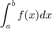
Se utilizan los polinomios de interpolación de Lagrange
Donde 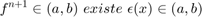$
Eso quiere decir que 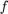$ es derivable un numero determinado de veces y esa derivada es continua por lo que gracias a la teria de Lagrange encontramos que
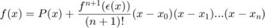
Con
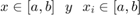
Con esto sabemos que la funcion es igual a un polinomio de grado que coincide con la funcion en determinados puntos mas un termino de error.
A estas formulas de Newton Cotes se les llaman formulas de 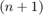 puntos donde
- 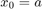
- 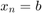
- 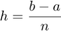 (Donde h es el paso)
- 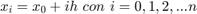
REGLA DEL TRAPECIO (n=1)
Se le llama regla del trapecio porque nos define el area de un trapecio, se calcula el area del trapecio definida por el polinomio de primer grado. Por lo que es importante saber que para un Polinomio de grado uno, la regla del trapecio nos dara como error 0 y será exacta
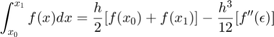
Donde
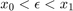
- 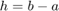
- 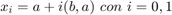
Ejemplo para 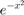
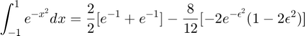
Con
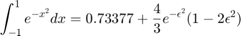
Con
REGLA DE SIMPSON (n=2)
Si queremos interpolar 3 puntos para un polinomio de segundo grado utilizamos la regla de Simpson, y lo que necesitamos hacer es encontra el valor de h como ya lo hemos definido
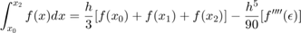
Donde
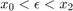
- 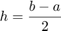
- 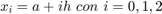
- 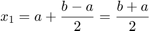
Ejemplo para
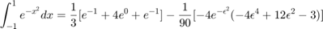
Con
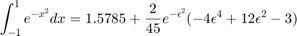
Con
REGLA DE SIMPSON 3/8 (n=3)
Ahora si pensamos en hacer la interpolacion de un polinomio de tercer grado necesitamos 4 puntos por lo que utilizamos la regla de tres octavos de Simpson
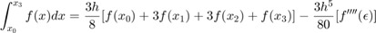
Donde
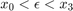


- 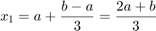
- 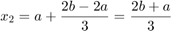
- 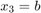
Ejemplo para
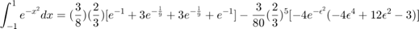
Con
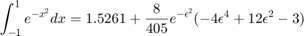
Con
A partir de la Regla del Trapecio y la Regla de Simpson podemos realizar mejores aproximaciones dadas ciertas condiciones. A continuación definiremos la Regla Compuesta del Trapecio y la Regla Compuesta de Simpson.
REGLA COMPUESTA DEL TRAPECIO
La idea es subdividir el intervalo de integración en varios intervalos y aplicar en cada uno de ellos la regla del trapecio. El resultado sería una aproximación a partir de la suma de áreas de los trapecios.
Sabiendo que los puntos intermedios serán evaluados 2 veces, obtenemos la siguiente formula:
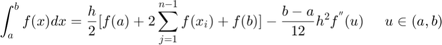
Donde
- = número de intervalos
- 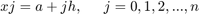
Y el último termino es un ajuste que permite la igualdad entre la integración analítica y la Regla Compuesta del Trapecio
Ejemplo para con 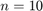 en [-1, 1]
- 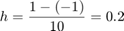
- 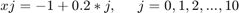
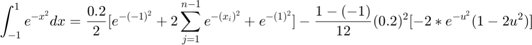
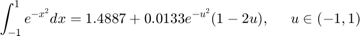
REGLA COMPUESTA DE SIMPSON
De la misma manera que en la Regla Compuesta del Trapecio, dividimos el intervalo de integración en subintervalos. En este caso, tomaremos dos intervalos para tener tres puntos y aplicar la Regla de Simpson en ellos.
Debido a que los puntos extremos de cada subintervalo forman parte de dos parábolas (excepto los puntos de integración), multiplicamos por 2 cada punto con subíndice par. En los puntos medios de cada parábola aplicamos la definición de la Regla de Simpson, de manera que multiplicaremos por cuatro los puntos con subíndice impar.
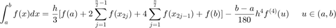
Donde
- = número de intervalos
Y el último término es un ajuste que permite la igualdad entre la integración analítica y la Regla Compuesta de Simpson
Ejemplo para con en [-1, 1]
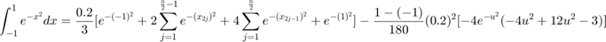
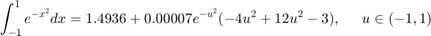
PROBLEMA 1
Para el PR04 reporte la grafica de la simulación númerica de la convolución y compare con el resultado análitico que obtuvo para el problema 1, esto es, su práctica tendrá que incluir una llamada a la funciónn convconm y posteriormente se tendrá que mostrar (mediante el Publish) la gráfica tanto de las señales invlucradas como el resultado de la convolución, y en esta última gráficara su resultado analitico, se tendrá que incluir el resultado analitico. REALICE LA CONVOLUCION DE LAS SIGUIENTES SEÑALES
%FIGURA 1 figure(1); h=@(t) ((-t+1).*((t>=0)&(t<1))+(t-1).*((t>=1)&(t<2))); t = (-0.01:0.01:3); s=h(t); plot (t,s); grid on; axis([-1 3 -1 2]); ax=gca; ax.XAxisLocation = 'origin'; ax.YAxisLocation = 'origin'; ax.Box='off';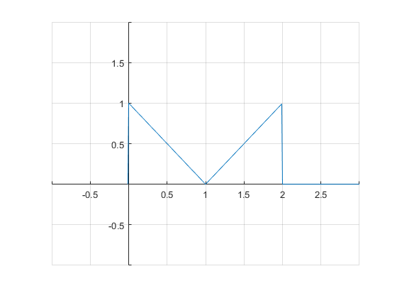
%FIGURA 2 figure(2); x=@(t) 1.*((t>=0)&(t<1)); t = (-0.01:0.01:3); s=x(t); plot (t,s); grid on; axis([-1 2 -1 2]); ax=gca; ax.XAxisLocation = 'origin'; ax.YAxisLocation = 'origin'; ax.Box='off';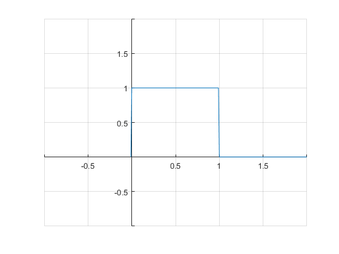
%CONVOLUCION
h=@(t) ((-t+1).*((t>=0)&(t<1))+(t-1).*((t>=1)&(t<2)));
x=@(t) 1.*((t>=0)&(t<1));
f=@(t) ((-t.^2)/2 + t).*((t>=0)&(t<1))+ (t.^2 - 3.*t + 5/2).*((t>=1)&(t<2))+(-(t.^2)/2 + 2.*t - 3/2).*((t>=2)&(t<3));
convconm2(x, h, f, -1, 4, -1, 2, -1, 2, -1:.1:4);
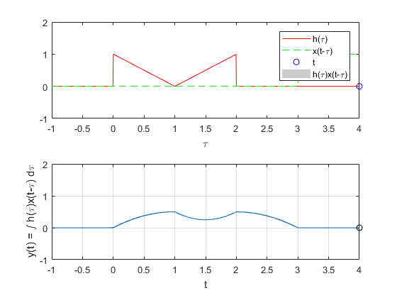 RESULTADO ANALITICO
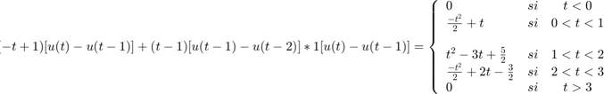
PROBLEMA 2
Para el PR04 reporte la grafica de la simulación númerica de la convolución y compare con el resultado análitico que obtuvo para el problema 3, esto es, su práctica tendrá que incluir una llamada a la funciónn convconm y posteriormente se tendrá que mostrar (mediante el Publish) la gráfica tanto de las señales invlucradas como el resultado de la convolución, y en esta última gráficara su resultado analitico, se tendrá que incluir el resultado analitico. REALICE LA CONVOLUCION DE LAS SIGUIENTES SEÑALES
%FIGURA 3 figure(3); p=@(t)t.*(t<1)+(t>=1)-t.*(t<0)-(t>2); t = (-0.01:0.01:3); s=p(t); plot (t,s); grid on; axis([-1 4 -1 2]); ax=gca; ax.XAxisLocation = 'origin'; ax.YAxisLocation = 'origin'; ax.Box='off';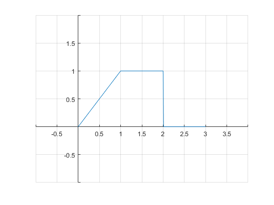
%FIGURA 4 figure(4); p = @(t) (t>=1)-(t>=3); t = (0.999:0.01:3.1); s=p(t); plot (t,s); grid on; axis([-1 4 -1 2]); ax=gca; ax.XAxisLocation = 'origin'; ax.YAxisLocation = 'origin'; ax.Box='off';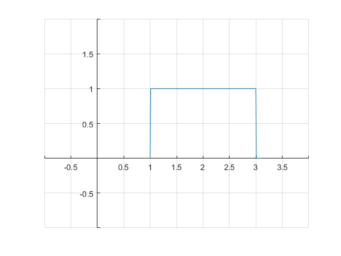
%CONVOLUCION
h = @(t) t.*(t<1)+(t>=1)-t.*(t<0)-(t>2);
x = @(t) ((t>=1) & (t<3));
f = @(t) (0.5-t+0.5*(2.^t)).*(t>=1 & t<2) + (t-(3/2)).*(t>=2 & t<3) + (-3+3*t-0.5*(2.^t)).*(t>=3 & t<4) + (5-t).*(t>=4 & t<5);
convconm2(x, h, f, -1, 6, -1, 2, -1, 5, 0:.1:6);
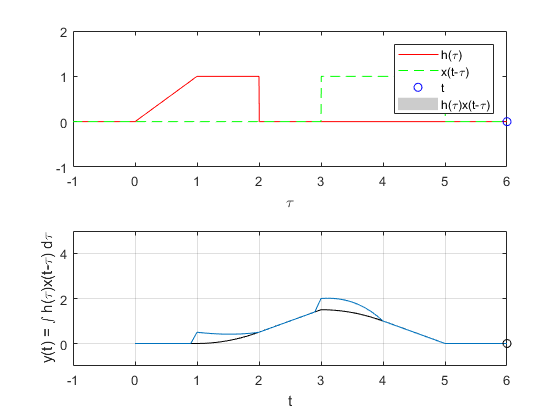 RESULTADO ANALITICO 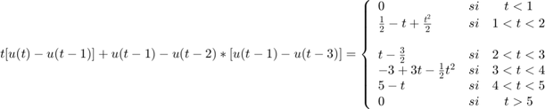
PROBLEMA 3
Para el PR06 reporte la grafica de la simulación númerica de la correalción y compare con el resultado análitico que obtuvo para el problema f), esto es, su práctica tendrá que incluir una llamada a la funciónn convconm y posteriormente se tendrá que mostrar (mediante el Publish) la gráfica tanto de las señales involucradas como el resultado de su correlación, y en esta última graficara su resultado analitico, se tendrá que incluir el resultado analitico. Realice la correlacion de las señales en las figuras 5 y 6
Figura 5
figure; h=@(t) 1.*((t>=0)&(t<3))-1.*((t>=3)&(t<4)); t = (-0.01:0.01:6); s=h(t); plot (t,s); grid on; axis([-1 6 -3 2]); ax=gca; ax.XAxisLocation = 'origin'; ax.YAxisLocation = 'origin'; ax.Box='off';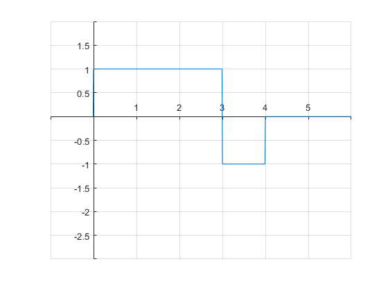
Figura 6
figure; x=@(t) -1.*((t>=-4)&(t<-3))+1.*((t>=-3)&(t<0)); t = (-5:0.01:2); s=x(t); plot (t,s); grid on; axis([-5 2 -3 2]); ax=gca; ax.XAxisLocation = 'origin'; ax.YAxisLocation = 'origin'; ax.Box='off'; f=@(t) (-4-t).*((t>=-4)&(t<-3))+(t+2).*((t>=-3)&(t<-1))+(4+3.*t).*((t>=-1)&(t<0))+(-3.*t+4).*((t>=0)&(t<1))+(-t+2).*((t>=1)&(t<3))+(-4+t).*((t>=3)&(t<4));
RESULTADO CORRELACION
f=@(t) (-4-t).*((t>=-4)&(t<-3))+(t+2).*((t>=-3)&(t<-1))+(4+3.*t).*((t>=-1)&(t<0))+(-3.*t+4).*((t>=0)&(t<1))+(-t+2).*((t>=1)&(t<3))+(-4+t).*((t>=3)&(t<4)); x=@(t) -1.*((t>=-4)&(t<-3))+1.*((t>=-3)&(t<0)); h=@(t) 1.*((t>=0)&(t<3))-1.*((t>=3)&(t<4)); convconm2(x, h, f, -6, 6, -2, 6, -3, 6, -6:.1:6);
RESULTADO ANALITICO
PROBLEMA 4
Para el PR06 reporte la grafica de la simulación númerica de la correalción y compare con el resultado análitico que obtuvo para el problema f), esto es, su práctica tendrá que incluir una llamada a la funciónn convconm y posteriormente se tendrá que mostrar (mediante el Publish) la gráfica tanto de las señales involucradas como el resultado de su correlación, y en esta última graficara su resultado analitico, se tendrá que incluir el resultado analitico. Realice la correlacion de las señales en las figuras 7 y 8
%FIGURA 7 figure(7); f= @(t) (t>=0)-2*(t>2)+2*(t>=4); t= 0:0.001:4; y= f(t); plot (t,y); grid on; axis([-1 5 -2 2]); ax=gca; ax.XAxisLocation = 'origin'; ax.YAxisLocation = 'origin'; ax.Box='off';
%FIGURA 8 figure(8) f= @(t) (t>=0)-2*(t>=3)+2*(t>=4); t= 0:0.001:4; y= f(t); plot (t,y); grid on axis([-1 5 -2 2]); ax=gca; ax.XAxisLocation = 'origin'; ax.YAxisLocation = 'origin'; ax.Box='off';
%%RESULTADO CORRELACION
x = @(t) 1.*((t>=0 & t<3) - (t>=3 & t<4));
h = @(t) 1.*(-(t>=-4 & t<-2) + (t>=-2 & t<0));
f = @(t) (-4-t).*(t>=-4 & t<-2) + (t).*(t>=-2 & t<-1) + (3*t+2).*(t>=-1 & t<0) + (2+t).*(t>=0 & t<1) + (-3*t+6).*(t>=1 & t<2) + (2-t).*(t>=2 & t<3) + (-4+t).*(t>=3 & t<4);
convconm2(x, h, f, -5, 5, -2, 2, -3, 4, -4.25:.1:4.25)
RESULTADO ANALITICO